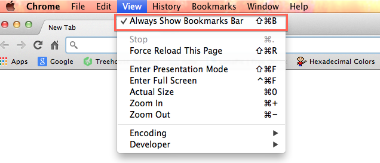
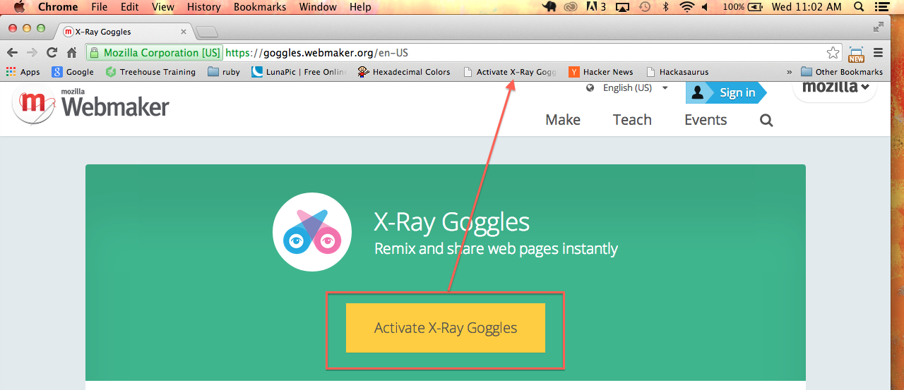
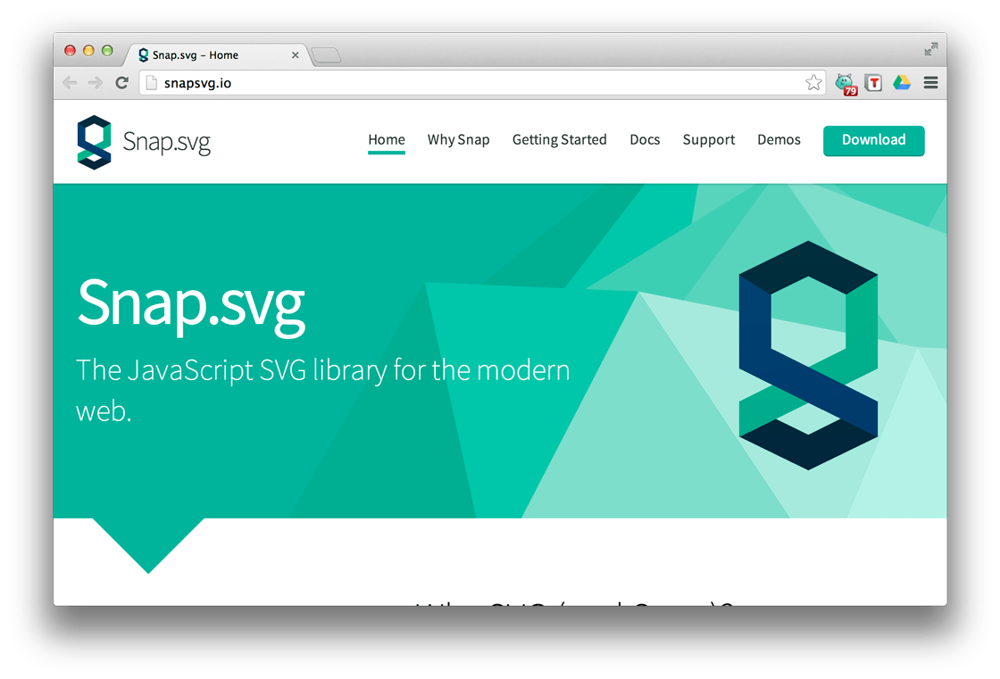

Since coming to MakerSquare back in February, I have had the opportunity to work with the Girl Scouts’ CoderGirls program. It’s an awesome program with an even more awesome group of girls. So, what is CoderGirls? It’s an intro to computer coding program that was developed as part of the Girl Scouts’ Girls in STEM initiative. STEM is a growing movement in education that encourages students to get more involved in Science, Technology, Engineering and Math.
Each class, the girls work on building their HTML/CSS skills as they create their own web sites. It’s amazing to watch these girls. They are like sponges, so eager to learn. I have really enjoyed mentoring the girls as they grow more confident in their web design skills.
The Importance of Technology Education
It’s also reinforced for me how critical technology education is for today’s youth. Kids today have never known a world without the internet. Think about that for a second. Technology has literally altered the very fabric of society. Take a look at the numbers: 20% of third graders own cell phones while 83% of middle school students have one. If we don’t educate these kids on how to effectively use technology now, we are putting them at a disadvantage later on in their life. If you don’t believe me, consider this: 65% of today’s students will be employed in jobs that don’t yet exist. Yes, you read that right. It’s become clear, that we are preparing our children for a world that we can’t even imagine.
I also believe that there is a misconception among a lot of society that kids are born understanding technology and don’t need to be taught it. But I disagree. Using technology is different from understanding technology. I can drive a car but open the hood, and I’m completely lost. So when my car breaks down, I am completely dependent on the tow truck driver and the mechanic. Education becomes key in moving someone away from complete dependence.
With technology, education helps students move away from just passively consuming knowledge. Instead digital literacy helps empower students to become producers of knowledge.
Okay, I’m getting off my soapbox. Actually, I want to share with you a fun tool to help introduce web design to new students.
Mozilla Webmaker
Mozilla Webmaker is an awesome free resource that I encourage you to take a look at. Webmaker is a project that helps people make cool things on the web.
Webmaker has some great tools to use in web development. One of my favorites is a tool called X-Ray Goggles. What is it? Well, it’s a friendlier version of the ‘inspect element’ toolbar.
X-Ray goggles is a great introduction to web design. It allows you to remix a page and investigate the different elements that make up the page. For instance, I remixed the CNN page (apparently there is a serious Zombie outbreak going on in Hollywood). This is a great way to get kids excited about learning – let them try out X-Ray goggles on a page of their choice and see what they can create.
How to Install X-Ray Goggles
Make sure your web browser’s bookmarks bar is enabled.

Drag the “Activate X-Ray Goggles” button into your bookmarks bar. It will automatically be added as a button that you can click to activate the Goggles on any webpage.

Go to the page you want to inspect/re-mix and click the X-Ray goggles button on the bookmarks bar. Time to play!
Ideas for using X-Ray Goggles in the classroom
Scavenger Hunt – Create a scavenger hunt on a particular page and have students pair up to find the elements. Discuss what they think each element does.
Remix a page – Have students use a certain site and remix it with X-Ray goggles based on a set of instructions. Then compare the results and discuss what elements they changed/used.
Independent Remix – Set students loose on a page of their choosing.
Final Thoughts
I often hear educators talk about the importantance of soft skills which are overlooked at times in the classroom. Skills such as critical thinking, problem solving, patience and flexibility are not necessarily spelled out in the curriculum and yet we all know how essential these skills are in the real world… I think there is a great opportunity in technology education to really emphasize those soft skills.
I encourage you to look into the Girl Scouts’ CoderGirls program and others like it. If you’re a teacher, take a look at some of the great resources available on the web and see if you can integrate technology into your classroom. If you’re a programmer, consider mentoring a student or volunteering with a program. Together, I think we can make a real difference.
So it’s been a few weeks since I have been able to sit down to work on my blog…but my brain is so full of new ideas that I just have to share a few of the things I’ve been learning.
I’m really enjoying working with JavaScript. It’s a very powerful language all on its own but when you add a few libraries in, Javascript becomes the all powerful, all knowing wizard of Oz.
What’s a JavaScript library? Glad you asked. Libraries are collections of pre-written JavaScript code which you can use to help make your awesome stuff more awesome. Libraries can help you accomplish a wide range of tasks from building forms to animation, from building graphs to displaying interactive maps and more. There are hundreds of libraries – with more being written each day. A great resource to look at is JSDB which has different category lists of JavaScript libraries.
My favorite library is definitely JQuery because it makes working with the DOM (the Document Object Model, i.e. the actual elements on your webpage) so easy. However, in the last two weeks, I’ve been spending more and more time playing with SVG libraries.
SVG? Gotta love those acronyms! SVG stand for scalable vector graphics. That cleared it up for you, right? Ha. Let’s break it down. SVGs are like special images (graphics) that can shrink and expand (scalable) and don’t pixelate (they don’t get blurry, i.e vectors). You may have created SVGs in programs like Adobe Illustrator or the open-source Inkscape, but did you know you can make SVGs by writing actual code? Take a look below.
1234
<svgheight="100"width="100"><circlecx="50"cy="50"r="40"stroke="black"stroke-width="3"fill="red"/> Sorry, your browser does not support inline SVG.
</svg>
So what’s happening in this snippet? We define an <svg> element that is 100 pixels wide and 100 pixels tall. Then we create a circle with a center point of (50, 50) and a radius of 40 pixels. We also add a message for the poor souls who are using antiquated browsers – telling them what they are missing out on. And the result…
I know what you are thinking…That’s a lot of code for a little circle. What if I wanted multiple circles?? Which brings me to my original topic. JavaScript libraries. There are actually JS libraries that help you easily create SVG elements! Let’s look at one.

Snap SVG is a great library that easy enough for beginners to use and powerful enough for advanced developers to enjoy.
Getting started is a snap. Download the code from the site and set up your index.html page with a script tag in the body of your html.
Cool, right? Snap makes SVGs easier and your code more readable. We create a circle with canvas.circle(x, y, r) and then we change the circle’s attributes with .attr().
Okay, so, we created a circle again. What makes using JavaScript any better than just writing it out with HTML?
Well, for starters, you have a lot more options with what you can do with the circle. How about moving the circle around? Totally doable.
Add the following line below your circle code:
smallCircle.drag();
Now trying dragging the circle around the screen. Nice, huh? You can also try it out in the embedded codepen above on the page.
Still not convinced? You want more? Alright, check this out.
I use a loop to create multiple circles dynamically with Javascript. I changed the x value of each circle I created so that it doesn’t sit on top of its neighbor. If I was using HTML, I would have to write out the circle code four times. Using JavaScript and Snap SVG, I can simply use a for loop.
And the pretty random colors? I use randInt() to create random numbers. The function takes a range of numbers and returns a random number in that range. Then I use the fill attribute to create a random rgb color to apply to each circle created in the loop.
Snap does a lot more than just pretty circles. If you’re interested, I encourage you to check out the documentation and start experimenting. I’ve embarked on a project to build the game Battleship, ehm, I mean BattleDrones, and I’m using Snap to create my game boards and ships. Snap is making things a lot easier…it has ways of checking if elements are overlapping and other helpful methods that make a game easier to design.
I’ll be writing about my experience creating Battleship soon, so stay tuned!
It’s Sunday evening and I’m finally getting to sit down and really reflect on my first week at school. And my first thought is…has it really been just a week??
So this weekend, I decided to try my hand at building a simple Rock, Paper, Scissors game. Inspired by an Ruby assignment earlier this week, I thought it would be fun to make a site where you could visually see and play Rock, Paper, Scissors.
I also thought it would be a good review of the basics of JavaScript, since we’ll be starting on that this week.
The code below is actually the fourth revision and I’m still not totally happy with it. But I figure as I get better in JavaScript, I’ll be able to improve the code.
We’ll start with the HTML for the game. I used the Foundation CSS framework to layout my page and JavaScript and JQuery to create the game. I’ve included the head of my HTML document so that you can get a better idea of what I needed to include to get it to work.
Tip: Make sure your JQuery file is above your script.js file in <head></head>, otherwise your page can act up.
12345678910
<head><metacharset="UTF-8"><title>Rock Paper Scissors</title><linkrel="stylesheet"href="normalize.css"><linkrel="stylesheet"href="foundation.css"><linkrel="stylesheet"type="text/css"href="style2.css"><script type="text/javascript"src="jquery.js"></script><script type="text/javascript"src="modernizr.js"></script><script type="text/javascript"src="script3.js"></script></head>
Among other things, Foundation makes it super easy to set up a simple grid layout it just a few minutes. Having, in the past, written my CSS from scratch, it has taken a little time for me to let go of my control issues regarding this (well, I’m trying to work on it!).
I won’t post the whole code here (feel free to take a look at the code on GitHub). However, to give you an idea of how I named stuff, here’s a snippet.
So, personally, I find it easier when I’m using JQuery to give the important stuff meaningful ids. As you can see each image is contained within a link that goes nowhere but each image also gets an id so that later on I can add a border around the picture picked by the player. The code for the computer is similar except there’s no need for the links since the computer’s choice is artificially created.
I did minimal styling but there are a couple of things I wanted to point out. There were a couple of <div> elements that I didn’t want to display immediately when the page loaded…so I simple set display: none. Later on, with JavaScript, I will make them appear when they’re needed.
Okay, now for a little JavaScript and JQuery. I started out by simply mapping out what I wanted my program to do. In my script.js file, I commented out each step of the game.
1234567
// Player picks rock, paper, or scissors by clicking on that image.// Whatever image she picks, add a border around it to denote its selection.// Disable other image links.// Computer picks choice and border is added to computer's choice.// Player's choice and Computer's choice are compared.// Based on rules of game, determine a winner and display it.// Invite to play again, clear image borders and renable links.
I ended up deciding to create a player Object and a computer Object to hold my values. I also gave myself the ability to change the value with a method built into the Objects. (Sadly enough, this didn’t occur to me until the fourth revision). Note: an Object is simply a special type of data with properties and methods. Properties are the values associated with an Object and methods are actions that can be used on Objects.
Next I created two functions updateComputer() and updatePlayer() to change the values in my player and computer Objects. The updatePlayer() was really straightforward but the updateComputer() uses another function I created called computerInput() which randomly picks a value.
Originally I used a if/else if/else statement but switched to a switch statement (I amuse myself). I’m actually thinking about switching back to if/else if statement because I want to try not rounding my random number and see if I get more variety in the game that way (a problem for another day!). FYI: You can’t use logical operators in a switch statement because a switch works by comparing what is in switch() to each case.
Up next is a determineWinner() function that actually does the comparing between the player’s choice and the computer’s choice.
It’s really just a big if/else if statement. First, it checks to see if there is a tie and if there’s not a tie then it works it’s way down the list of possibilities until it finds one that matches. I’m definitely interested in seeing if there are other ways to do this comparison but this is what I came up with for now. The last bit of this function actually displays the winner on the page. You’ll see I used JQuery for this and removed classes and changed text as necessary.
I wrote a couple of smaller functions to help me out with the image links.
Based on which button the player picks, a series of events occur. I know what you’re thinking. There’s this whole concept of DRY (Don’t Repeat Yourself) in programming…and you’re right. I’m absolutely positive there’s a better way of doing it – I just couldn’t see a solution for it today. Maybe tomorrow.
The cool thing about the program is that I reset the game without refreshing the page so that means there’s a lot of potential for going further with the program. I’m seeing a score tracker in the future!
All in all, this was a very fun way to review JavaScript basics and I really like the end product. But, as always, I’ve got plans for improvement! I’ll keep you updated on my revisions.
For now, I must go to sleep. Tomorrow is the start of a new week!
Well, Day 1 is officially winding down and I already feel like I’m on more solid ground with the basics of Ruby than I was when I was working alone in Tulsa.
So, with that in mind, I wanted to share a few bits of knowledge that I gathered today.
One of the big aha moments for me today was the difference in end results that you get when using Array#each versus Array#map.
Let’s take a look at a bit of code…In this particular example, I’ve created an array containing the names of my beloved cats.
Okay, my goal is to iterate through each element of my array and capitalize the first letter… (FYI: iterate is the fancy way of saying loop) So, what to use? Well that all depends on what you want the end result to look like.
Okay, so now what? What does that mean? It printed out the words capitalized but it’s like the code didn’t stick to the actual array or something strange (at least that’s what I thought at first). Well, it turns out that .each executes the block of code but then returns the original array.
So we need something else. Take a look at the below code.
Do you see the difference? The .map method executes the block of code and literally changes the original array. Map is used to iterate but also to map the elements to something else. Pretty cool, huh?
Is that the only solution? As is generally the case with Ruby, the answer is no. Take a look at the code below.
Hey! What happened there? In this case, .each actually did change the original array…What did we do different? Suprisingly, it’s the exclamation point that makes all the difference. Check it out…
cat = "meow" capitalized_cat = cat.capitalize puts cat #prints unchanged cat or "meow" puts capitalized_cat #prints newly created capitalized_cat or "Meow"
Interesting, right? The capitalized_cat is actually a copy of the string in the original cat. The original string doesn’t change. However, when you use the exclamation point, it changes the original kitty as well as creates the capitalized_kitty.
Too cool. The key is knowing your end goal and then finding the method that will get you there. I originally thought that .each and .map could be used interchangeably and while sometimes they can be…they can actually have two different end results.